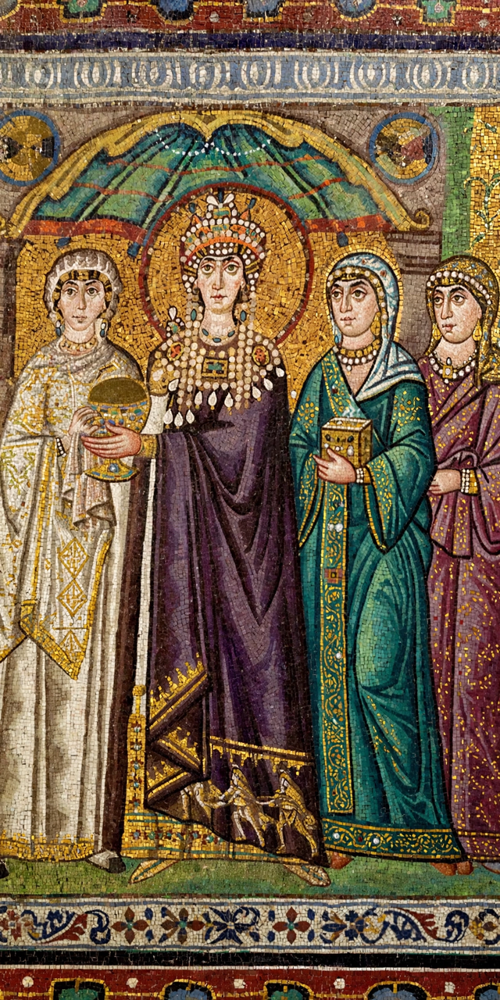

| Theodora | |
|---|---|
| Born | c. 500 |
| Died | 28 June 548, Constantinople |
| Consort | Justinian I |
| Reign as Augusta | 527 – 548 |

Theodora (c. 500 – 28 June 548) was a Byzantine empress and the wife of emperor Justinian I. Coming from humble origins — according to Procopius she had worked as an actress, a profession then associated with prostitution — she rose to become one of the most powerful women in Roman history and effectively co-ruler of the empire alongside her husband.
The chief source for Theodora's early life is Procopius' hostile Secret History, which many scholars treat with caution. Her father Acacius was a bear-keeper for the Green faction at the Hippodrome of Constantinople. After a period spent in North Africa and Alexandria, where she may have come under Miaphysite Christian influence, she returned to Constantinople. Justinian, then heir to the throne, fell in love with her; a law prohibiting senators from marrying actresses was repealed, and they married, probably in 525. She was crowned Augusta alongside him in 527.
Theodora's most famous moment came during the Nika riots of January 532, when the Blues and Greens united against Justinian and a mob set much of the city ablaze. When Justinian and his counsellors contemplated flight, Theodora spoke against it, declaring — in Procopius' account in the Wars — that "royal purple makes a fine burial shroud." The revolt was crushed by generals Belisarius and Mundus, with tens of thousands killed in the Hippodrome.
Theodora exercised real political power: her name appears in legislation, foreign diplomats addressed her, and she championed Miaphysite Christians, sheltering persecuted clergy in the Hormisdas Palace. Laws issued in her era expanded women's rights — prohibiting forced prostitution, strengthening penalties for rape and trafficking, and improving wives' property and divorce rights. She died, probably of cancer, in 548 and was buried in the Church of the Holy Apostles. She is venerated as a saint in the Eastern Orthodox Church.
See also: Hagia Sophia · Byzantine Empire